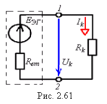

2.9. Метод эквивалентного генератора
Метод эквивалентного генератора (МЭГ) основан на теореме об эквивалентном генераторе; сложную схему электрической цепи с произвольным числом ИН и ИТ рассматривают как активный двухполюсник (см. рис. 2.61) по отношению к зажимам 1 и 2 ветви с искомым током, который определяют по выражению:
 где EЭГ = UXk - ЭДС эквивалентного генератора, равная напряжению холостого хода между зажимами 1 и 2 отключенного пассивного элемента ветви с сопротивлением Rk; Rвт - внутреннее сопротивление эквивалентного генератора, равное входному сопротивлению цепи относительно разомкнутых зажимов 1 и 2 (при этом в цепи все идеальные ИН замыкаются накоротко, а ветви с ИТ - разрываются). Ограничения. Метод эквивалентного генератора не применим:
Примечание. Эквивалентный генератор может быть представлен источником тока JЭГ = EЭГ/Rвт и параллельно соединенным с ним резистором с проводимостью Gвт = 1/Rвт. Тогда ток Ik = JЭГRвт/(Rвт + Rk). |
|||